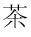

QUESTION 13:

Can printed music be represented using binary?
Japanese and Chinese characters, also, have been translated into bit patterns, and computers can manipulate those symbols just as easily as ASCII. Unicode is an agreement created by an international committee on how to represent characters using 16 bits. Here are 16 bits 111110011111110 and here is the character it represents in Unicode: 
Say that the international committee decides to represent a new Chinese character. How can they do this? Easy: they find a bit pattern not yet used to represent any symbol and assign the new character to that pattern.
The correspondence between human language symbols and bit patterns is arbitrary. All you have to do is be sure that you are using enough bits so that all the symbols of the language have a unique bit pattern to represent them.
Can printed music be represented using binary?